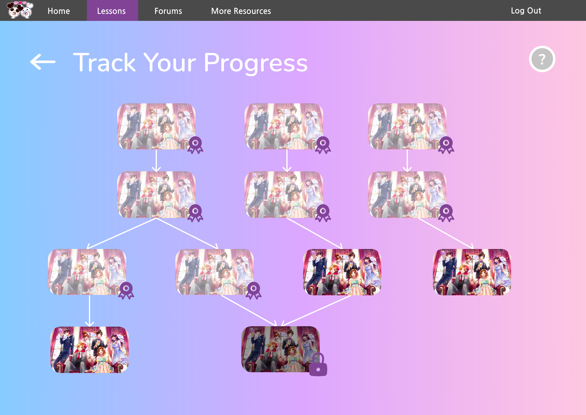

Need Help?
If you need help understanding content or a lesson, check out the FORUMS to get in contact with others who may be able to help!
For help navigating our system, check the Frequently Asked Questions (FAQ) below.
If you have questions unanswered by the forums and the FAQ, please email guide.to.honeyworks@gmail.com.
Frequently Asked Questions (FAQ)
How do I get started?
To get started, simply go to the Sign In page and get started with a new account! You can either create an account as a NEW STUDENT or an EXISTING FAN.
Once you have completed the account creation process, you will be sent to your Lessons Dashboard and guided through each section by Kumamaru and Panmy.
After you've been given a full walkthrough of each area on your Lessons Dashboard, you will be prompted to choose one of three lessons as your starting point.
Don't worry about what you choose to start with! No matter what you start on, you will be able to access the other lessons at any time,
and you will be able to access all lessons offered by the Guide at some point in time.
The Guide to HoneyWorks combines a structured path of teaching while allowing users to have some level of freedom on
what they want to learn first and what they are more interested in. The point of the Guide is to make it easier to navigate HoneyWorks by adding some structure to the sporadic,
interconnected web of content in a more structured way, but we still want you to have fun and delve more into what you are interested in!
What's the difference between signing up as a NEW STUDENT and signing up as an EXISTING FAN?
Signing up as a NEW STUDENT means you have little to no familiarity with HoneyWorks, while signing up as an EXISTING FAN means that you're familiar with HoneyWorks to some capacity.
When you sign up as a NEW STUDENT, the Guide gets you started from the beginning, bringing you through all the basics from the get-go to make sure you have
a good foundation and understanding of what HoneyWorks and what its main content is.
On the other hand, starting as an EXISTING FAN streamlines the process of getting you acquainted with HoneyWorks and lets you skip through what you already know.
During onboarding, the Guide will check your knowledge and review you on what you seem to know about HoneyWorks, giving you access to lessons and forums accordingly
based on what you already know.
After a certain amount of learning, a NEW STUDENT will have the same priveleges and advantages of an EXISTING FAN! The primary difference is the way the Guide gets you started.
I'm getting lost on the Lessons pages. How do I navigate them?
When you create a new account, your first time to the Lessons Dashboard and each part of a lesson should give you a walkthrough
on what each element on the page is, means, and how to use it.
However, if you ever need a refresher, no worries! Each page in your lessons has a little circular '?' icon you can click on to re-experience
the walkthrough for that page.
Simply click on the icon and either Kumamaru or Panmy should be there to help you out as a page navigation guide!
To move on to the next step of the walkthrough for the page, click the arrow in the chat bubble. The step is also read outloud,
so if you would like to mute the audio be sure to click the speaker icon next to your helper. To exit the page navigation guide,
click the '?' icon again.
What's the difference between Track Your Progress and Check Lessons Accessible?
While both Track Your Progress and Check Lessons Accessible allow you to view you lessons, the primary difference is in the method of display.

Track Your Progress (left) shows you all your past, present, and upcoming lessons in a tree. With this, you can see what lessons you've already completed,
what lessons you have access to and still need to complete, and what lessons you can unlock soon as well as what lessons you must complete in order to unlock it.
The Track Your Progress page is also helpful in visually making connections between lessons, making it easier to track the interconnected web of content.
On the other hand, Your Lessons Accessible (right) is organized differently. Not only are you unable to view the relationships between lessons as directly,
but you also are unable to preview upcoming lessons. Rather than help you visually make connections, this page is meant to have all your currently unlocked lessons
viewed easily and immediately, showing you all of your unlocked lessons you have yet to complete and allowing you to access your previously completed lessons in a neat
and tidy fashion.
Why can I not click on certain things?
If you can't click on something, you're most likely trying to access locked material!
Whether it be in your progress tree or in your lessons, sometimes you get a preview of something you haven't
unlocked yet! This is because we want to prepare you for upcoming lessons, so that when you get to the new lesson
it's easier for you to make connections to past material you've gone past!
If something has a darkened image and a locked icon over it, you need to make more progress before you can unlock
that content! Below is an example of a locked lesson (on the left) and an unlocked lesson (on the right)!
I completed a lesson, so why isn't the next lesson getting unlocked?
While you may have completed a lesson, you are not allowed to move on until you've received a full score on your Basic Knowledge Check.
After completing a Knowledge Check, you receive immediate feedback on your quiz. If any questions are answered incorrectly, you return to the Knowledge Check
and are shown the questions you answered incorrectly (on the left). If all questions are answered correctly, you are sent to the Course Complete page
and shown the material you have unlocked (on the right).
If after completing a quiz you remain on your Basic Knowledge Check and you do not have a full score, you haven't passed the lesson!
The Basic Knowledge Checks are put in place to make sure you understand the core aspects of the content you are learning about at the minimum level,
so you're not allowed to continue until you've achieved full scores.
This is different from the Intermediate and Detailed Knowledge Checks, which you can choose to take upon properly completing a lesson to unlock more detailed information
about the lesson itself. The Intermediate Knowledge Check and Detailed Knowledge Check are for making sure you have a more in-depth understanding of what you've learned
if you choose to do so. For these checks, you do not need to get full scores in order to unlock more developed checks of the lesson. These Knowledge Checks do not unlock
new lessons, they only unlock more content for the lesson you are currently working on.
There's a character I'd seen in promotions but I haven't seen in my lessons yet. Are they still from HoneyWorks?
Most likely, they are still from HoneyWorks! Like previously mentioned, the Guide to HoneyWorks tries to make sure you have
all necessary context before you're introduced to a piece of media, so there are a lot of characters or stories you
may take awhile to reach. If you'd like to double check, go to View by Characters (also accessible from your
Lessons Dashboard) and see if you can recognize them on the list of HoneyWorks characters! They might simply be locked!
Still have questions? Feel free to email guide.to.honeyworks@gmail.com.